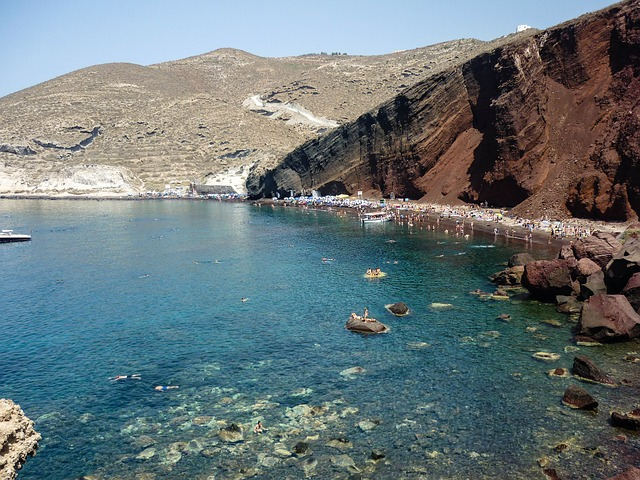
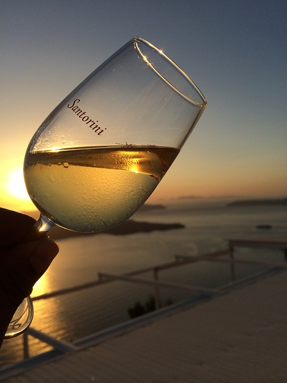

Echoes of Eruption
Discover Santorini's post-volcanic landscape, where ancient eruptions have shaped its dramatic cliffs, fertile soil, and renowned vineyards. Explore the island's geological history and mystical allure.
Caldera Wonders: Explore the captivating landscape of Santorini's volcanic caldera, shaped by the aftermath of ancient eruptions.
From dramatic cliffs and rugged terrain to stunning panoramic views of the Aegean Sea, immerse yourself in the awe-inspiring beauty of
this geological wonder.
>

Ashen Mystique: Explore the mysterious allure of Santorini's volcanic ash, a symbol of both destruction and regeneration. From black sand beaches to lunar-like landscapes, witness the otherworldly beauty of ash-covered terrain. Delve into the geological history of the island and uncover the secrets hidden within layers of volcanic sediment.

Journey through Santorini's renowned vineyards, where ancient vines thrive in the mineral-rich soil of volcanic origin. Sample the distinctive wines crafted from Assyrtiko, Athiri, and Aidani grapes, each expressing the terroir and character of the island's volcanic landscape. Experience the depth and complexity of Santorini's winemaking tradition, rooted in centuries of volcanic heritage.
Discover the fertile soil of Santorini, enriched by volcanic ash and debris from past eruptions. Experience the abundance of lush vineyards, thriving orchards, and verdant farmland that flourish in this unique environment.
Discovering the Unseen
Santorini, an Aegean gem, reveals hidden wonders beyond its famous views. From ancient ruins to vibrant vineyards, each aspect of Santorini tells a captivating story waiting to be discovered.
2
Active Volcanic Islands
9TH CENTURY BC
Ancient Thira
1600 BC
Minoanian Civiliazation